現在、大幅に作り直した新バージョンを開発中です。
開発環境構築(Windows)
Yuimarlの標準的な開発環境構築について述べます。
ここに書かれているのは、作者がWindows10（x64）のパソコン上で、この手順で開発環境を構築したということの紹介です。この通りでなくても開発することは可能です。
ここでは、開発環境用のデータベースとして、
Java
DB (Apache Derby)
を使用した場合について記述しています。Java DB は、Java EE の開発環境に標準で付属しているので、基本的に、Java DB
の使用を推奨いたします。
何らかの理由で、Java DB ではなく、MySQLを使用したい場合は、このページに書かれた内容を、データベース関連以外について一通り実施してから、「開発環境構築（MySQL）」を実施してください。
Mac で開発を行う場合は、「開発環境構築（Mac）」をご覧ください。
JDK8
Javaの開発環境であるJava Platform, Standard Edition Development Kit (JDK)をインストールします。
- JDK8のダウンロードサイトにアクセスします。

-
「Accept License
Agreement」をチェックし、「jdk-8u102-windows-x64.exe」（32bit版OSの場合は「jdk-8u102-windows-i586.exe」）のリンクをクリックしてダウンロードします。
（この執筆時点では、「8u102」が最新版でしたが、最新版が変わっていれば、その最新版をダウンロードしてください。） - ダウンロードした「jdk-8u102-windows-x64.exe」を実行します。
インストール先は「C:\jdk1.8.0_102\」に変更します。
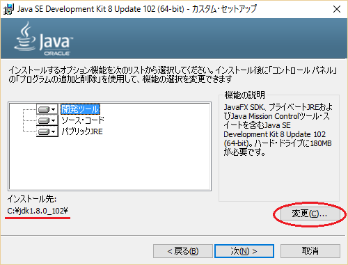 - 「Javaセットアップ - コピー先フォルダ」は、そのままで「次」ボタンを押します。
「完了」画面が表示されたら、「閉じる」ボタンで終了します。 - 「コントロールパネル」を開き（Windows10の場合はスタートボタンを右クリックして「コントロールパネル」）、「システムとセキュリティ」-「システム」-「システムの詳細設定」とたどり、「システムのプロパティ」ダイアログの「詳細設定」タブで、「環境変数」ボタンを押します。
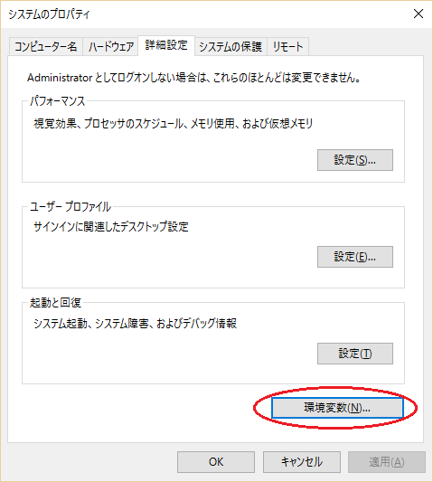 - 「環境変数」ダイアログで、「システム環境変数」の下にある「新規」ボタンを押し、「新しいシステム変数」ダイアログで、「変数名」に「JAVA_HOME」、「変数値」に「C:\jdk1.8.0_102」と入力し、「OK」ボタンを押します。
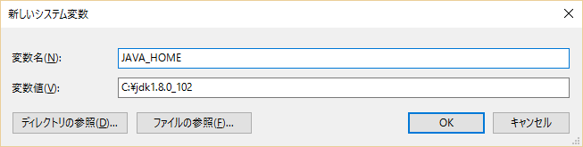 - 「システム環境変数」の一覧から、変数が「Path」となっている行を選択し、「編集」ボタンを押します。「環境変数名の編集」画面で「新規」ボタンを押し、「%JAVA_HOME%\bin」を追加し、「OK」ボタンをクリックします。
「環境変数」ダイアログを「OK」ボタンを押して閉じます。
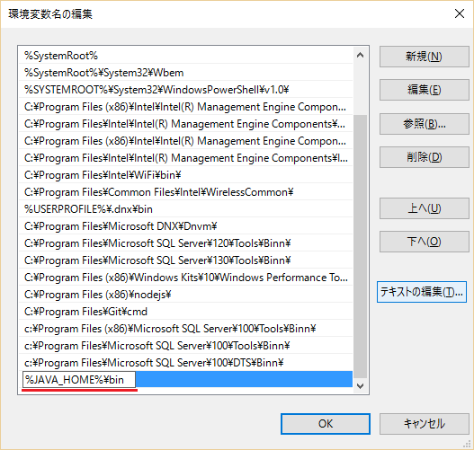 - コマンドプロンプトで
java -version
を実行し、Javaのバージョンが「1.8.0_102」と表示されることを確認します。
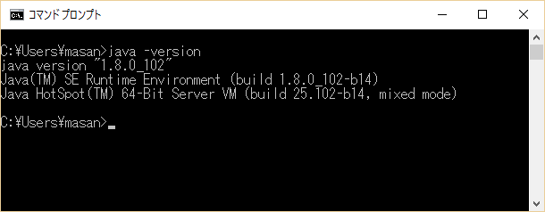
Payaraのインストール
- Payara Serverのダウンロードサイトにアクセスします。
http://www.payara.fish/downloads
「Payara Server Full 162 Download」ボタンをクリックして、ダウンロードを実行します。
- ダウンロードした payara-4.1.1.162.zip を解凍します。
- 解凍して作成された payara41 フォルダを、C:\payara41 に移動します。
NetBeans IDE
NetBeans IDEは、Javaの開発環境です。Java EEの開発に便利な機能を提供してくれます。以下の手順でインストールします。
- NetBeansのページにアクセスし、「Download」ボタンをクリックします。
http://netbeans.org/
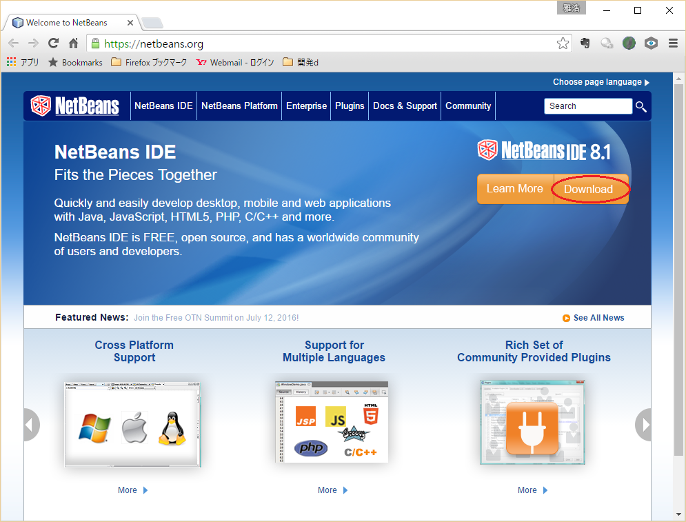 - 「Java EE」の「ダウンロード」ボタンを押してダウンロードを行います。
- ダウンロードされた「netbeans-8.1-javaee-windows.exe」を実行します。
-
インストーラが起動したら、「GlassFish Server Open Source Edition
4.1.1」のチェックを外し、「次」ボタンを押します。
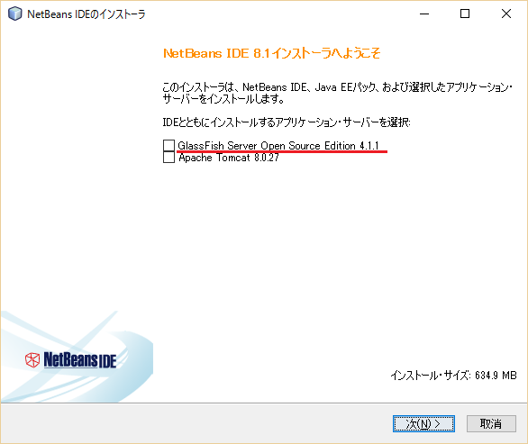 - 「ライセンス契約」画面で、「ライセンス契約条件に同意する」をチェックし、「次」ボタンを押します。
- 「NetBeans IDE 8.1のインストール」画面はデフォルトのままで、「次」ボタンを押します。
- 「サマリー」画面で「インストール」ボタンを押します。
- 「スタート」-「すべてのプログラム」-「NetBeans」-「NetBeans IDE 8.1」とたどって、NetBeansを起動します。
- 「ツール」-「サーバー」を選択します。
- 「サーバー」画面で「サーバーの追加」ボタンを押します。
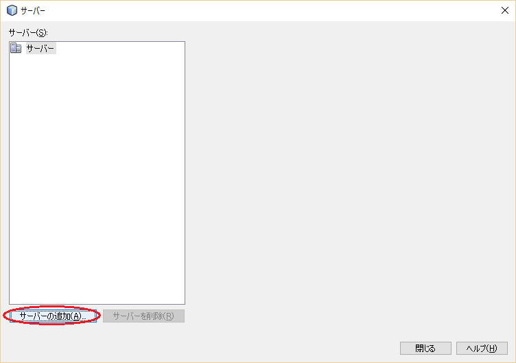 - 「サーバー・インスタンスの追加」画面で、「GlassFish Server」を選択し、「次」ボタンを押します。
- 「サーバーの場所」で「C:\payara41」を選択し、「次」ボタンを押します。
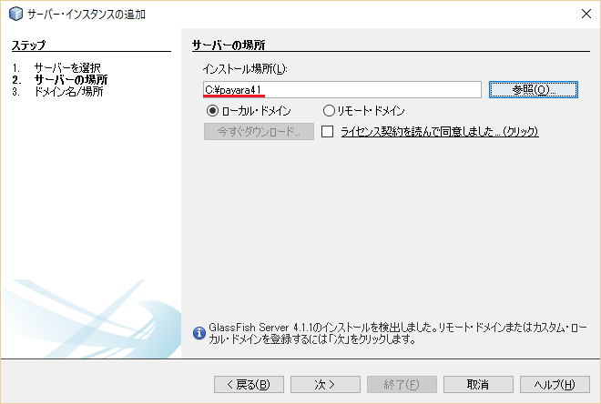 - 「ドメインの場所」はデフォルトのままで「終了」ボタンを押します。
- 「サーバー」画面を「閉じる」ボタンを押して閉じます。
PayaraとJava DBの起動
- 初回のみ、以下のように Java DB の初期設定を行います。
- テキストエディタで、次のファイルを開きます。
C:\jdk1.8.0_102\jre\lib\security\java.policy - 次の行が存在することを確認します。
permission java.net.SocketPermission "localhost:0", "listen"; - この行の下に、次の行を追加します。
permission java.net.SocketPermission "localhost:1527", "listen"; - java.policy ファイルを保存して、テキストエディタを終了します。
- テキストエディタで、次のファイルを開きます。
-
Payara と Java DB
を起動するバッチファイルを作成し、そのファイルをダブルクリックして起動するようにすると便利です。
起動バッチファイルの例：
ファイル名 startserver.batcd C:\payara41\bin
echo start-database
call asadmin.bat start-database ← Java DB を起動
echo start-server
call asadmin.bat start-domain domain1 ← Payara を起動
echo done. -
同様に、Payara と Java DB
を停止するバッチファイルを作成し、そのファイルをダブルクリックして停止するようにすると便利です。
起動バッチファイルの例：
ファイル名 stopserver.batcd C:\payara41\bin
echo stop-domain
call asadmin.bat stop-domain domain1 ← Payara を停止
echo stop-database
call asadmin.bat stop-database ← Java DB を停止
echo done.
Yuimarlプロジェクトのインポート
- ダウンロードページから、YuimarlプロジェクトのZIP形式圧縮ファイルをダウンロードします。
- 旧バージョンのYuimarlプロジェクトがすでにインポートされている場合は、次の手順で削除します。
- NetBeansでYuimarlのプロジェクトを１つずつ選択し、右クリックで表示されたポップアップメニューから、「閉じる」を選択し、すべてのプロジェクトを閉じます。
- エクスプローラで、「ドキュメント」-「NetBeansProjects」の下にある、「yuimarl」フォルダを削除します。
- NetBeansの「ファイル」メニューから、「プロジェクトをインポート」-「ZIPから」を選択します。
- 「プロジェクトをZIPからインポート」画面で、ダウンロードしたZIPファイルを選択し、「インポート」ボタンを押します。
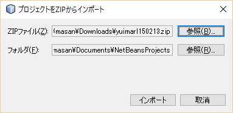 - Java DBが起動していなければ、起動を行います。（上記参照）
- 「yuimarl-db-javadb-setup」プロジェクトを右クリックし、ポップアップメニューから「ビルド」を選択します。
出力欄に、「BUILD SUCCESS」と表示されれば、ビルドが成功です。
- このビルドを実行すると、「yuimarl-db-javadb-setup」プロジェクトの「build.xml」ファイルにある、「createJavaDB」（テーブル作成）と「importInitData」（データ投入）のAntタスクが実行されます。
（「ファイル」タブでファイルを見ることができます。） - 「createJavaDB」で作成されるテーブルの定義は、「yuimarl-db-javadb-setup」-「sql」-「YUIMARL_JavaDB_DDL.sql」ファイルにあります。
- 「importInitData」で作成されるデータは、「yuimarl-db-javadb-setup」-「xml」-「YUIMARL_DB_INIT_DATA.xml」ファイルが読み込まれます。このデータ投入には、DbUnitが使用されています。
- [データの確認方法]
投入されたデータの中身を確認するためには、コマンドプロンプトで、以下のように入力します。（赤文字が入力するコマンドです。）C:\Users\masan> java -jar C:\payara41\javadb\lib\derbyrun.jar ij ← 起動コマンド
ij バージョン 10.10
ij>CONNECT 'jdbc:derby://localhost:1527/yuimarl'; ← yuimarl データベースに接続
ij>select * from PARTY; ← PARTYテーブルの中身を確認する場合
ij>exit;← 終了

- このビルドを実行すると、「yuimarl-db-javadb-setup」プロジェクトの「build.xml」ファイルにある、「createJavaDB」（テーブル作成）と「importInitData」（データ投入）のAntタスクが実行されます。
- 「yuimarl-lib」プロジェクトを右クリックし、ポップアップメニューから「ビルド」を選択します。
出力欄に、「BUILD SUCCESS」と表示されれば、ビルドが成功です。 - 「yuimarl-ejb」プロジェクトを右クリックし、ポップアップメニューから「ビルド」を選択します。
出力欄に、「BUILD SUCCESS」と表示されれば、ビルドが成功です。 - 「yuimarl-web」プロジェクトを右クリックし、ポップアップメニューから「ビルド」を選択します。
出力欄に、「BUILD SUCCESS」と表示されれば、ビルドが成功です。 - 「yuimarl-ear」プロジェクトを右クリックし、ポップアップメニューから「ビルド」を選択します。
出力欄に、「BUILD SUCCESS」と表示されれば、ビルドが成功です。
- CSSファイルの解析でエラーとなっている箇所があれば、そのファイルを開き、赤いマークをクリックします。ポップアップから、「予期しないトークン・・・が見つかりました。CSS解析エラーのフィルタ処理」をクリックすると、エラーが消えます。
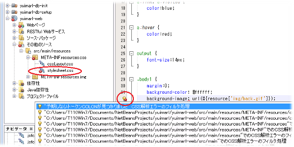
JDBCの設定
Payaraの管理画面で、Java DBデータベースへの接続のためのJDBC接続の設定を行います。
- Payaraサーバーが起動していなければ、上記の方法で起動します。
- ブラウザで
http://localhost:4848/
にアクセスし、管理画面を起動します。 - 管理画面の左側のツリーから、「Resources」-「JDBC」-「JDBC Connection Pools」を選択します。
「JDBC Connection Pools」画面で「New」ボタンを押します。
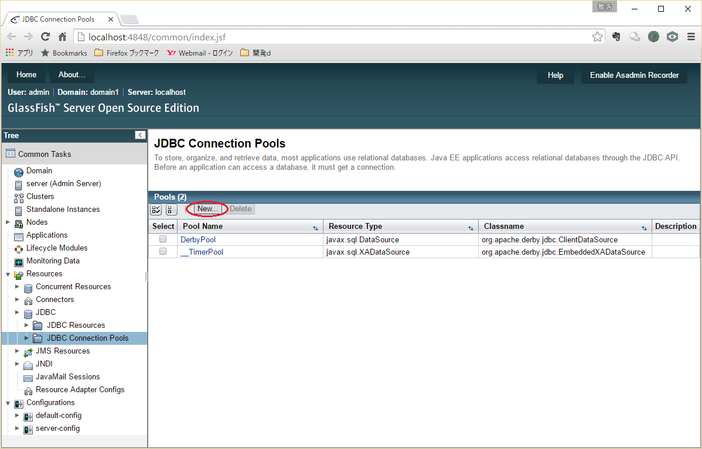 - 「New JDBC Connection Pool (Step 1 of 2)」画面で、次のように入力・選択します。
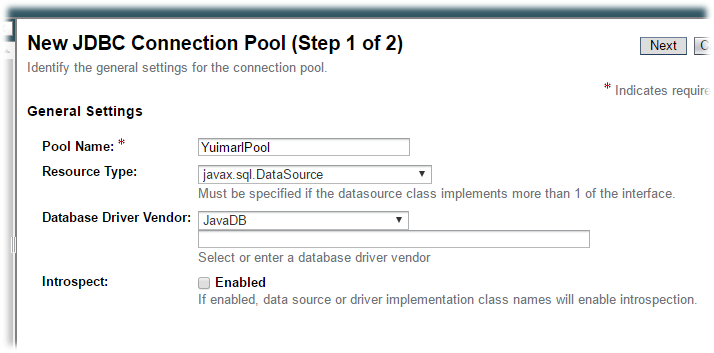名前 値 Pool Name YuimarlPool Resource Type javax.sql.DataSource Database Driver Vendor JavaDB
「Next」ボタンを押します。 - 「New JDBC Connection Pool (Step 2 of 2)」画面の「Additional Properties」で、以下の値を設定します。（下記以外は変更しない）
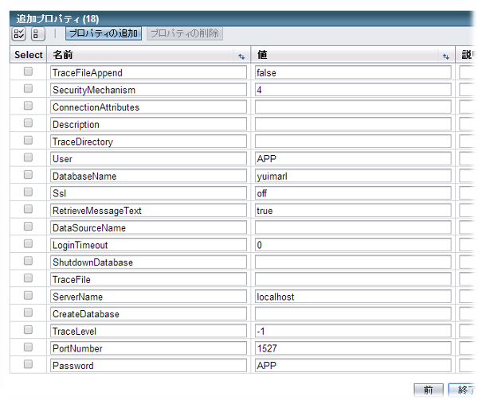名前 値 User APP DatabaseName yuimarl ServerName localhost PortNumber 1527 Password APP
「Finish」ボタンを押します。 - 管理画面の左側のツリーから、「Resources」-「JDBC」-「JDBC Resources」を選択します。
「JDBC Resources」画面で「New」ボタンを押します。
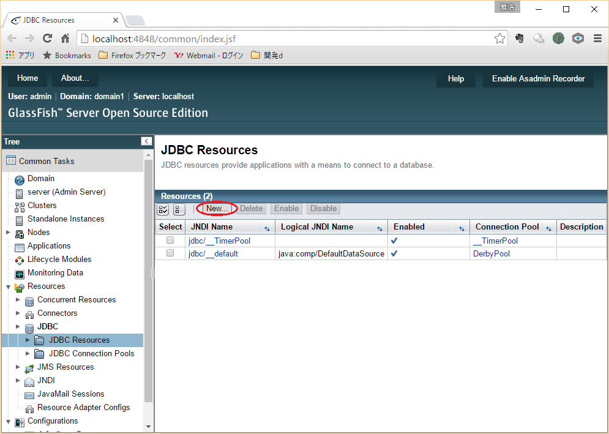 - 「New JDBC Resource」画面で、次のように入力・選択します。
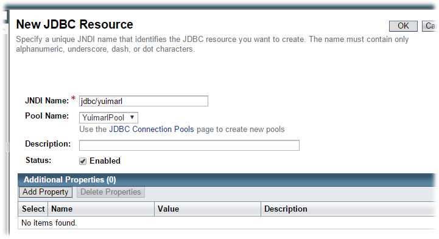名前 値 JNDI Name jdbc/yuimarl Pool Name YuimarlPool
「OK」ボタンを押します。
Realmの設定
Payaraの管理画面で、ユーザー認証のための Realm（レルム）の設定を行います。
- 管理画面の左側のツリーから、「Configurations」-「server-config」-「Security」-「Realms」を選択します。
「Realms」画面で「New」ボタンを押します。
- 「New Realm」画面で、次のように入力・選択します。
名前 値 Name yuimarl-realm Class Name com.sun.enterprise.security.auth.realm.jdbc.JDBCRealm JAAS Context jdbcRealm JNDI jdbc/yuimarl User Table YUIMARL_USER User Name Column USER_ID Password Column PASSWORD Group Table YUIMARL_USER Group Table User Name Column USER_ID Group Name Column ACCOUNT_GROUP Password Encryption Algorithm digest-algorithm Digest Algorithm SHA-256 Encoding Hex 
「OK」ボタンを押します。
Yuimarlの実行
- Java DB と Payara が起動していなければ、起動を行います。
- NetBeans IDEで、「yuimarl-ear」プロジェクトを選択して右クリックします。ポップアップメニューから「実行」を選択します。
または、Webブラウザを起動し、次のアドレスを入力します。
http://localhost:8080/yuimarl-web/
ログイン画面が表示されますので、ユーザーIDに「U00001」、パスワードに「test」と入力し、「ログイン」ボタンをクリックすると、メインメニュー画面が表示します。
以上が、初期セットアップの手順です。通常の開発時には、以下の順に行います。
Java DB起動 → Payara起動 → NetBeans起動 → Yuimarl実行 → NetBeans終了 → Payara停止 →
Java DB停止